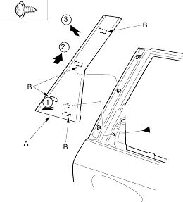
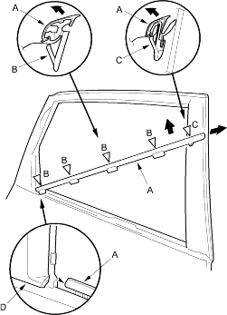

- Remove the door glass outer weatherstrip.
- Lower the glass fully.
- Remove the quarter inner trim (see step 6 on page 20-153).
- Remove the screw, pull up the rear pillar trim (A) to release the hooks (B), then remove the trim.
Fastener Location  : Screw, 1
: Screw, 1

- Install the trim in the reverse order of removal.
- Put on gloves to protect your hands.
- Take care not to scratch the door.
- Starting at the front, pry the door glass outer weatherstrip (A) up to detach the clips (B, C), and pull the weatherstrip forward to release it from the rear pillar trim (D), then remove the weatherstrip.
Fastener Location B  : Clip, 4
: Clip, 4C : Clip, 1

- Install the weatherstrip in the reverse order of removal and replace any damaged clips.